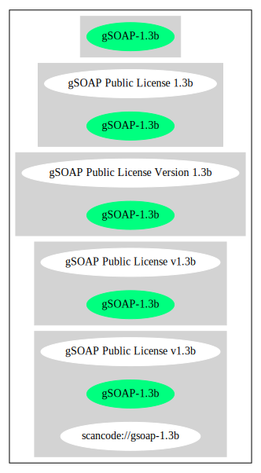

Key |
Value |
|---|---|
Fullname |
gSOAP Public License v1.3b |
Shortname |
gSOAP-1.3b |
Rating |
Unknown, probably Attention or Stop or No-Go |
Classification |
WeakCopyleft |
Other Names:
scancode://gsoap-1.3b
Homepage: http://www.cs.fsu.edu/~engelen/license.html
SPDX: http://spdx.org/licenses/gSOAP-1.3b.json
gSOAP Public License
Version 1.3b
The gSOAP public license is derived from the Mozilla Public License (MPL1.1).
The sections that were deleted from the original MPL1.1 text are 1.0.1, 2.1.(c),(d),
2.2.(c),(d), 8.2.(b), 10, and 11. Section 3.8 was added. The modified sections
are 2.1.(b), 2.2.(b), 3.2 (simplified), 3.5 (deleted the last sentence), and
3.6 (simplified).
This license applies to the gSOAP software package, with the exception of the
soapcpp2 and wsdl2h source code located in gsoap/src and gsoap/wsdl, all code
generated by soapcpp2 and wsdl2h, the UDDI source code gsoap/uddi2, and the Web
server sample source code samples/webserver. To use any of these software tools
and components commercially, a commercial license is required and can be
obtained from www.genivia.com.
1 DEFINITIONS.
1.0.1.
1.1. "Contributor"
means each entity that creates or contributes to the creation of Modifications.
1.2. "Contributor Version"
means the combination of the Original Code, prior Modifications used by a Contributor, and the Modifications made by that particular Contributor.
1.3. "Covered Code"
means the Original Code, or Modifications or the combination of the Original Code, and Modifications, in each case including portions thereof.
1.4. "Electronic Distribution Mechanism"
means a mechanism generally accepted in the software development community for the electronic transfer of data.
1.5. "Executable"
means Covered Code in any form other than Source Code.
1.6. "Initial Developer"
means the individual or entity identified as the Initial Developer in the Source Code notice required by Exhibit A.
1.7. "Larger Work"
means a work which combines Covered Code or portions thereof with code not governed by the terms of this License.
1.8. "License"
means this document.
1.8.1. "Licensable"
means having the right to grant, to the maximum extent possible, whether at the time of the initial grant or subsequently acquired, any and all of the rights conveyed herein.
1.9. "Modifications"
means any addition to or deletion from the substance or structure of either the Original Code or any previous Modifications. When Covered Code is released as a series of files, a Modification is:
A.
Any addition to or deletion from the contents of a file containing Original Code or previous Modifications.
B.
Any new file that contains any part of the Original Code, or previous Modifications.
1.10. "Original Code"
means Source Code of computer software code which is described in the Source Code notice required by Exhibit A as Original Code, and which, at the time of its release under this License is not already Covered Code governed by this License.
1.10.1. "Patent Claims"
means any patent claim(s), now owned or hereafter acquired, including without limitation, method, process, and apparatus claims, in any patent Licensable by grantor.
1.11. "Source Code"
means the preferred form of the Covered Code for making modifications to it, including all modules it contains, plus any associated interface definition files, scripts used to control compilation and installation of an Executable, or source code differential comparisons against either the Original Code or another well known, available Covered Code of the Contributor's choice. The Source Code can be in a compressed or archival form, provided the appropriate decompression or de-archiving software is widely available for no charge.
1.12. "You" (or "Your")
means an individual or a legal entity exercising rights under, and complying with all of the terms of, this License or a future version of this License issued under Section 6.1. For legal entities, "You" includes any entity which controls, is controlled by, or is under common control with You. For purposes of this definition, "control" means (a) the power, direct or indirect, to cause the direction or management of such entity, whether by contract or otherwise, or (b) ownership of more than fifty percent (50%) of the outstanding shares or beneficial ownership of such entity.
2 SOURCE CODE LICENSE.
2.1. The Initial Developer Grant.
The Initial Developer hereby grants You a world-wide, royalty-free, non-exclusive license, subject to third party intellectual property claims:
(a)
under intellectual property rights (other than patent or trademark) Licensable by Initial Developer to use, reproduce, modify, display, perform, sublicense and distribute the Original Code (or portions thereof) with or without Modifications, and/or as part of a Larger Work; and
(b)
under patents now or hereafter owned or controlled by Initial Developer, to make, have made, use and sell ("offer to sell and import") the Original Code, Modifications, or portions thereof, but solely to the extent that any such patent is reasonably necessary to enable You to utilize, alone or in combination with other software, the Original Code, Modifications, or any combination or portions thereof.
(c)
(d)
2.2. Contributor Grant.
Subject to third party intellectual property claims, each Contributor hereby grants You a world-wide, royalty-free, non-exclusive license
(a)
under intellectual property rights (other than patent or trademark) Licensable by Contributor, to use, reproduce, modify, display, perform, sublicense and distribute the Modifications created by such Contributor (or portions thereof) either on an unmodified basis, with other Modifications, as Covered Code and/or as part of a Larger Work; and
(b)
under patents now or hereafter owned or controlled by Contributor, to make, have made, use and sell ("offer to sell and import") the Contributor Version (or portions thereof), but solely to the extent that any such patent is reasonably necessary to enable You to utilize, alone or in combination with other software, the Contributor Version (or portions thereof).
(c)
(d)
3 DISTRIBUTION OBLIGATIONS.
3.1. Application of License.
The Modifications which You create or to which You contribute are governed by the terms of this License, including without limitation Section 2.2. The Source Code version of Covered Code may be distributed only under the terms of this License or a future version of this License released under Section 6.1, and You must include a copy of this License with every copy of the Source Code You distribute. You may not offer or impose any terms on any Source Code version that alters or restricts the applicable version of this License or the recipients' rights hereunder. However, You may include an additional document offering the additional rights described in Section 3.5.
3.2. Availability of Source Code.
Any Modification created by You will be provided to the Initial Developer in Source Code form and are subject to the terms of the License.
3.3. Description of Modifications.
You must cause all Covered Code to which You contribute to contain a file documenting the changes You made to create that Covered Code and the date of any change. You must include a prominent statement that the Modification is derived, directly or indirectly, from Original Code provided by the Initial Developer and including the name of the Initial Developer in (a) the Source Code, and (b) in any notice in an Executable version or related documentation in which You describe the origin or ownership of the Covered Code.
3.4. Intellectual Property Matters.
(a) Third Party Claims.
If Contributor has knowledge that a license under a third party's intellectual property rights is required to exercise the rights granted by such Contributor under Sections 2.1 or 2.2, Contributor must include a text file with the Source Code distribution titled "LEGAL" which describes the claim and the party making the claim in sufficient detail that a recipient will know whom to contact. If Contributor obtains such knowledge after the Modification is made available as described in Section 3.2, Contributor shall promptly modify the LEGAL file in all copies Contributor makes available thereafter and shall take other steps (such as notifying appropriate mailing lists or newsgroups) reasonably calculated to inform those who received the Covered Code that new knowledge has been obtained.
(b) Contributor APIs.
If Contributor's Modifications include an application programming interface and Contributor has knowledge of patent licenses which are reasonably necessary to implement that API, Contributor must also include this information in the LEGAL file.
(c) Representations.
Contributor represents that, except as disclosed pursuant to Section 3.4(a) above, Contributor believes that Contributor's Modifications are Contributor's original creation(s) and/or Contributor has sufficient rights to grant the rights conveyed by this License.
3.5. Required Notices.
You must duplicate the notice in Exhibit A in each file of the Source Code. If it is not possible to put such notice in a particular Source Code file due to its structure, then You must include such notice in a location (such as a relevant directory) where a user would be likely to look for such a notice. If You created one or more Modification(s) You may add your name as a Contributor to the notice described in Exhibit A. You must also duplicate this License in any documentation for the Source Code where You describe recipients' rights or ownership rights relating to Covered Code. You may choose to offer, and to charge a fee for, warranty, support, indemnity or liability obligations to one or more recipients of Covered Code. However, You may do so only on Your own behalf, and not on behalf of the Initial Developer or any Contributor.
3.6. Distribution of Executable Versions.
You may distribute Covered Code in Executable form only if the requirements of Section 3.1-3.5 have been met for that Covered Code. You may distribute the Executable version of Covered Code or ownership rights under a license of Your choice, which may contain terms different from this License, provided that You are in compliance with the terms of this License and that the license for the Executable version does not attempt to limit or alter the recipient's rights in the Source Code version from the rights set forth in this License. If You distribute the Executable version under a different license You must make it absolutely clear that any terms which differ from this License are offered by You alone, not by the Initial Developer or any Contributor. If you distribute executable versions containing Covered Code as part of a product, you must reproduce the notice in Exhibit B in the documentation and/or other materials provided with the product.
3.7. Larger Works.
You may create a Larger Work by combining Covered Code with other code not governed by the terms of this License and distribute the Larger Work as a single product. In such a case, You must make sure the requirements of this License are fulfilled for the Covered Code.
3.8. Restrictions.
You may not remove any product identification, copyright, proprietary notices or labels from gSOAP.
4 INABILITY TO COMPLY DUE TO STATUTE OR REGULATION.
If it is impossible for You to comply with any of the terms of this License with respect to some or all of the Covered Code due to statute, judicial order, or regulation then You must: (a) comply with the terms of this License to the maximum extent possible; and (b) describe the limitations and the code they affect. Such description must be included in the LEGAL file described in Section 3.4 and must be included with all distributions of the Source Code. Except to the extent prohibited by statute or regulation, such description must be sufficiently detailed for a recipient of ordinary skill to be able to understand it.
5 APPLICATION OF THIS LICENSE.
This License applies to code to which the Initial Developer has attached the notice in Exhibit A and to related Covered Code.
6 VERSIONS OF THE LICENSE.
6.1. New Versions.
Grantor may publish revised and/or new versions of the License from time to time. Each version will be given a distinguishing version number.
6.2. Effect of New Versions.
Once Covered Code has been published under a particular version of the License, You may always continue to use it under the terms of that version. You may also choose to use such Covered Code under the terms of any subsequent version of the License.
6.3. Derivative Works.
If You create or use a modified version of this License (which you may only do in order to apply it to code which is not already Covered Code governed by this License), You must (a) rename Your license so that the phrase "gSOAP" or any confusingly similar phrase do not appear in your license (except to note that your license differs from this License) and (b) otherwise make it clear that Your version of the license contains terms which differ from the gSOAP Public License. (Filling in the name of the Initial Developer, Original Code or Contributor in the notice described in Exhibit A shall not of themselves be deemed to be modifications of this License.)
7 DISCLAIMER OF WARRANTY.
COVERED CODE IS PROVIDED UNDER THIS LICENSE ON AN "AS IS" BASIS, WITHOUT WARRANTY OF ANY KIND, WHETHER EXPRESS, IMPLIED OR STATUTORY, INCLUDING, WITHOUT LIMITATION, THE IMPLIED WARRANTIES OF MERCHANTABILITY, OF FITNESS FOR A PARTICULAR PURPOSE, NONINFRINGEMENT OF THIRD PARTY INTELLECTUAL PROPERTY RIGHTS, AND ANY WARRANTY THAT MAY ARISE BY REASON OF TRADE USAGE, CUSTOM, OR COURSE OF DEALING. WITHOUT LIMITING THE FOREGOING, YOU ACKNOWLEDGE THAT THE SOFTWARE IS PROVIDED "AS IS" AND THAT THE AUTHORS DO NOT WARRANT THE SOFTWARE WILL RUN UNINTERRUPTED OR ERROR FREE. LIMITED LIABILITY THE ENTIRE RISK AS TO RESULTS AND PERFORMANCE OF THE SOFTWARE IS ASSUMED BY YOU. UNDER NO CIRCUMSTANCES WILL THE AUTHORS BE LIABLE FOR ANY SPECIAL, INDIRECT, INCIDENTAL, EXEMPLARY OR CONSEQUENTIAL DAMAGES OF ANY KIND OR NATURE WHATSOEVER, WHETHER BASED ON CONTRACT, WARRANTY, TORT (INCLUDING NEGLIGENCE), STRICT LIABILITY OR OTHERWISE, ARISING OUT OF OR IN ANY WAY RELATED TO THE SOFTWARE, EVEN IF THE AUTHORS HAVE BEEN ADVISED ON THE POSSIBILITY OF SUCH DAMAGE OR IF SUCH DAMAGE COULD HAVE BEEN REASONABLY FORESEEN, AND NOTWITHSTANDING ANY FAILURE OF ESSENTIAL PURPOSE OF ANY EXCLUSIVE REMEDY PROVIDED. SUCH LIMITATION ON DAMAGES INCLUDES, BUT IS NOT LIMITED TO, DAMAGES FOR LOSS OF GOODWILL, LOST PROFITS, LOSS OF DATA OR SOFTWARE, WORK STOPPAGE, COMPUTER FAILURE OR MALFUNCTION OR IMPAIRMENT OF OTHER GOODS. IN NO EVENT WILL THE AUTHORS BE LIABLE FOR THE COSTS OF PROCUREMENT OF SUBSTITUTE SOFTWARE OR SERVICES. YOU ACKNOWLEDGE THAT THIS SOFTWARE IS NOT DESIGNED FOR USE IN ON-LINE EQUIPMENT IN HAZARDOUS ENVIRONMENTS SUCH AS OPERATION OF NUCLEAR FACILITIES, AIRCRAFT NAVIGATION OR CONTROL, OR LIFE-CRITICAL APPLICATIONS. THE AUTHORS EXPRESSLY DISCLAIM ANY LIABILITY RESULTING FROM USE OF THE SOFTWARE IN ANY SUCH ON-LINE EQUIPMENT IN HAZARDOUS ENVIRONMENTS AND ACCEPTS NO LIABILITY IN RESPECT OF ANY ACTIONS OR CLAIMS BASED ON THE USE OF THE SOFTWARE IN ANY SUCH ON-LINE EQUIPMENT IN HAZARDOUS ENVIRONMENTS BY YOU. FOR PURPOSES OF THIS PARAGRAPH, THE TERM "LIFE-CRITICAL APPLICATION" MEANS AN APPLICATION IN WHICH THE FUNCTIONING OR MALFUNCTIONING OF THE SOFTWARE MAY RESULT DIRECTLY OR INDIRECTLY IN PHYSICAL INJURY OR LOSS OF HUMAN LIFE. THIS DISCLAIMER OF WARRANTY CONSTITUTES AN ESSENTIAL PART OF THIS LICENSE. NO USE OF ANY COVERED CODE IS AUTHORIZED HEREUNDER EXCEPT UNDER THIS DISCLAIMER.
8 TERMINATION.
8.1.
This License and the rights granted hereunder will terminate automatically if You fail to comply with terms herein and fail to cure such breach within 30 days of becoming aware of the breach. All sublicenses to the Covered Code which are properly granted shall survive any termination of this License. Provisions which, by their nature, must remain in effect beyond the termination of this License shall survive.
8.2.
8.3.
If You assert a patent infringement claim against Participant alleging that such Participant's Contributor Version directly or indirectly infringes any patent where such claim is resolved (such as by license or settlement) prior to the initiation of patent infringement litigation, then the reasonable value of the licenses granted by such Participant under Sections 2.1 or 2.2 shall be taken into account in determining the amount or value of any payment or license.
8.4.
In the event of termination under Sections 8.1 or 8.2 above, all end user license agreements (excluding distributors and resellers) which have been validly granted by You or any distributor hereunder prior to termination shall survive termination.
9 LIMITATION OF LIABILITY.
UNDER NO CIRCUMSTANCES AND UNDER NO LEGAL THEORY, WHETHER TORT (INCLUDING NEGLIGENCE), CONTRACT, OR OTHERWISE, SHALL YOU, THE INITIAL DEVELOPER, ANY OTHER CONTRIBUTOR, OR ANY DISTRIBUTOR OF COVERED CODE, OR ANY SUPPLIER OF ANY OF SUCH PARTIES, BE LIABLE TO ANY PERSON FOR ANY INDIRECT, SPECIAL, INCIDENTAL, OR CONSEQUENTIAL DAMAGES OF ANY CHARACTER INCLUDING, WITHOUT LIMITATION, DAMAGES FOR LOSS OF GOODWILL, WORK STOPPAGE, COMPUTER FAILURE OR MALFUNCTION, OR ANY AND ALL OTHER COMMERCIAL DAMAGES OR LOSSES, EVEN IF SUCH PARTY SHALL HAVE BEEN INFORMED OF THE POSSIBILITY OF SUCH DAMAGES. THIS LIMITATION OF LIABILITY SHALL NOT APPLY TO LIABILITY FOR DEATH OR PERSONAL INJURY RESULTING FROM SUCH PARTY'S NEGLIGENCE TO THE EXTENT APPLICABLE LAW PROHIBITS SUCH LIMITATION. SOME JURISDICTIONS DO NOT ALLOW THE EXCLUSION OR LIMITATION OF INCIDENTAL OR CONSEQUENTIAL DAMAGES, SO THIS EXCLUSION AND LIMITATION MAY NOT APPLY TO YOU.
10 U.S. GOVERNMENT END USERS.
11 MISCELLANEOUS.
12 RESPONSIBILITY FOR CLAIMS.
As between Initial Developer and the Contributors, each party is responsible for claims and damages arising, directly or indirectly, out of its utilization of rights under this License and You agree to work with Initial Developer and Contributors to distribute such responsibility on an equitable basis. Nothing herein is intended or shall be deemed to constitute any admission of liability.
EXHIBIT A.
"The contents of this file are subject to the gSOAP Public License Version 1.3 (the "License"); you may not use this file except in compliance with the License. You may obtain a copy of the License at
http://www.cs.fsu.edu/ engelen/soaplicense.html
Software distributed under the License is distributed on an "AS IS" basis, WITHOUT WARRANTY OF ANY KIND, either express or implied. See the License for the specific language governing rights and limitations under the License.
The Original Code of the gSOAP Software is: stdsoap.h, stdsoap2.h, stdsoap.c, stdsoap2.c, stdsoap.cpp, stdsoap2.cpp, soapcpp2.h, soapcpp2.c, soapcpp2_lex.l, soapcpp2_yacc.y, error2.h, error2.c, symbol2.c, init2.c, soapdoc2.html, and soapdoc2.pdf, httpget.h, httpget.c, stl.h, stldeque.h, stllist.h, stlvector.h, stlset.h.
The Initial Developer of the Original Code is Robert A. van Engelen. Portions created by Robert A. van Engelen are Copyright (C) 2001-2004 Robert A. van Engelen, Genivia inc. All Rights Reserved.
Contributor(s):
" ."
[Note: The text of this Exhibit A may differ slightly form the text of the notices in the Source Code files of the Original code. You should use the text of this Exhibit A rather than the text found in the Original Code Source Code for Your Modifications.]
EXHIBIT B.
"Part of the software embedded in this product is gSOAP software.
Portions created by gSOAP are Copyright (C) 2001-2009 Robert A. van Engelen, Genivia inc. All Rights Reserved.
THE SOFTWARE IN THIS PRODUCT WAS IN PART PROVIDED BY GENIVIA INC AND ANY EXPRESS OR IMPLIED WARRANTIES, INCLUDING, BUT NOT LIMITED TO, THE IMPLIED WARRANTIES OF MERCHANTABILITY AND FITNESS FOR A PARTICULAR PURPOSE ARE DISCLAIMED. IN NO EVENT SHALL THE AUTHOR BE LIABLE FOR ANY DIRECT, INDIRECT, INCIDENTAL, SPECIAL, EXEMPLARY, OR CONSEQUENTIAL DAMAGES (INCLUDING, BUT NOT LIMITED TO, PROCUREMENT OF SUBSTITUTE GOODS OR SERVICES; LOSS OF USE, DATA, OR PROFITS; OR BUSINESS INTERRUPTION) HOWEVER CAUSED AND ON ANY THEORY OF LIABILITY, WHETHER IN CONTRACT, STRICT LIABILITY, OR TORT (INCLUDING NEGLIGENCE OR OTHERWISE) ARISING IN ANY WAY OUT OF THE USE OF THIS SOFTWARE, EVEN IF ADVISED OF THE POSSIBILITY OF SUCH DAMAGE."{
"__impliedNames": [
"gSOAP-1.3b",
"gSOAP Public License v1.3b",
"scancode://gsoap-1.3b"
],
"__impliedId": "gSOAP-1.3b",
"facts": {
"SPDX": {
"isSPDXLicenseDeprecated": false,
"spdxFullName": "gSOAP Public License v1.3b",
"spdxDetailsURL": "http://spdx.org/licenses/gSOAP-1.3b.json",
"_sourceURL": "https://spdx.org/licenses/gSOAP-1.3b.html",
"spdxLicIsOSIApproved": false,
"spdxSeeAlso": [
"http://www.cs.fsu.edu/~engelen/license.html"
],
"_implications": {
"__impliedNames": [
"gSOAP-1.3b",
"gSOAP Public License v1.3b"
],
"__impliedId": "gSOAP-1.3b",
"__isOsiApproved": false,
"__impliedURLs": [
[
"SPDX",
"http://spdx.org/licenses/gSOAP-1.3b.json"
],
[
null,
"http://www.cs.fsu.edu/~engelen/license.html"
]
]
},
"spdxLicenseId": "gSOAP-1.3b"
},
"Scancode": {
"otherUrls": null,
"homepageUrl": "http://www.cs.fsu.edu/~engelen/license.html",
"shortName": "gSOAP Public License v1.3b",
"textUrls": null,
"text": "gSOAP Public License\n\nVersion 1.3b\n\nThe gSOAP public license is derived from the Mozilla Public License (MPL1.1).\nThe sections that were deleted from the original MPL1.1 text are 1.0.1, 2.1.(c),(d),\n2.2.(c),(d), 8.2.(b), 10, and 11. Section 3.8 was added. The modified sections\nare 2.1.(b), 2.2.(b), 3.2 (simplified), 3.5 (deleted the last sentence), and\n3.6 (simplified).\n\nThis license applies to the gSOAP software package, with the exception of the\nsoapcpp2 and wsdl2h source code located in gsoap/src and gsoap/wsdl, all code\ngenerated by soapcpp2 and wsdl2h, the UDDI source code gsoap/uddi2, and the Web\nserver sample source code samples/webserver. To use any of these software tools\nand components commercially, a commercial license is required and can be\nobtained from www.genivia.com.\n\n1 DEFINITIONS.\n\n1.0.1.\n1.1. \"Contributor\"\nmeans each entity that creates or contributes to the creation of Modifications.\n1.2. \"Contributor Version\"\nmeans the combination of the Original Code, prior Modifications used by a Contributor, and the Modifications made by that particular Contributor.\n1.3. \"Covered Code\"\nmeans the Original Code, or Modifications or the combination of the Original Code, and Modifications, in each case including portions thereof.\n1.4. \"Electronic Distribution Mechanism\"\nmeans a mechanism generally accepted in the software development community for the electronic transfer of data.\n1.5. \"Executable\"\nmeans Covered Code in any form other than Source Code.\n1.6. \"Initial Developer\"\nmeans the individual or entity identified as the Initial Developer in the Source Code notice required by Exhibit A.\n1.7. \"Larger Work\"\nmeans a work which combines Covered Code or portions thereof with code not governed by the terms of this License.\n1.8. \"License\"\nmeans this document.\n1.8.1. \"Licensable\"\nmeans having the right to grant, to the maximum extent possible, whether at the time of the initial grant or subsequently acquired, any and all of the rights conveyed herein.\n1.9. \"Modifications\"\nmeans any addition to or deletion from the substance or structure of either the Original Code or any previous Modifications. When Covered Code is released as a series of files, a Modification is:\nA.\nAny addition to or deletion from the contents of a file containing Original Code or previous Modifications.\nB.\nAny new file that contains any part of the Original Code, or previous Modifications.\n1.10. \"Original Code\"\nmeans Source Code of computer software code which is described in the Source Code notice required by Exhibit A as Original Code, and which, at the time of its release under this License is not already Covered Code governed by this License.\n1.10.1. \"Patent Claims\"\nmeans any patent claim(s), now owned or hereafter acquired, including without limitation, method, process, and apparatus claims, in any patent Licensable by grantor.\n1.11. \"Source Code\"\nmeans the preferred form of the Covered Code for making modifications to it, including all modules it contains, plus any associated interface definition files, scripts used to control compilation and installation of an Executable, or source code differential comparisons against either the Original Code or another well known, available Covered Code of the Contributor's choice. The Source Code can be in a compressed or archival form, provided the appropriate decompression or de-archiving software is widely available for no charge.\n1.12. \"You\" (or \"Your\")\nmeans an individual or a legal entity exercising rights under, and complying with all of the terms of, this License or a future version of this License issued under Section 6.1. For legal entities, \"You\" includes any entity which controls, is controlled by, or is under common control with You. For purposes of this definition, \"control\" means (a) the power, direct or indirect, to cause the direction or management of such entity, whether by contract or otherwise, or (b) ownership of more than fifty percent (50%) of the outstanding shares or beneficial ownership of such entity.\n2 SOURCE CODE LICENSE.\n\n2.1. The Initial Developer Grant.\n\nThe Initial Developer hereby grants You a world-wide, royalty-free, non-exclusive license, subject to third party intellectual property claims:\n(a)\nunder intellectual property rights (other than patent or trademark) Licensable by Initial Developer to use, reproduce, modify, display, perform, sublicense and distribute the Original Code (or portions thereof) with or without Modifications, and/or as part of a Larger Work; and\n(b)\nunder patents now or hereafter owned or controlled by Initial Developer, to make, have made, use and sell (\"offer to sell and import\") the Original Code, Modifications, or portions thereof, but solely to the extent that any such patent is reasonably necessary to enable You to utilize, alone or in combination with other software, the Original Code, Modifications, or any combination or portions thereof.\n(c)\n(d)\n\n2.2. Contributor Grant.\n\nSubject to third party intellectual property claims, each Contributor hereby grants You a world-wide, royalty-free, non-exclusive license\n(a)\nunder intellectual property rights (other than patent or trademark) Licensable by Contributor, to use, reproduce, modify, display, perform, sublicense and distribute the Modifications created by such Contributor (or portions thereof) either on an unmodified basis, with other Modifications, as Covered Code and/or as part of a Larger Work; and\n(b)\nunder patents now or hereafter owned or controlled by Contributor, to make, have made, use and sell (\"offer to sell and import\") the Contributor Version (or portions thereof), but solely to the extent that any such patent is reasonably necessary to enable You to utilize, alone or in combination with other software, the Contributor Version (or portions thereof).\n(c)\n(d)\n3 DISTRIBUTION OBLIGATIONS.\n\n3.1. Application of License.\n\nThe Modifications which You create or to which You contribute are governed by the terms of this License, including without limitation Section 2.2. The Source Code version of Covered Code may be distributed only under the terms of this License or a future version of this License released under Section 6.1, and You must include a copy of this License with every copy of the Source Code You distribute. You may not offer or impose any terms on any Source Code version that alters or restricts the applicable version of this License or the recipients' rights hereunder. However, You may include an additional document offering the additional rights described in Section 3.5. \n\n3.2. Availability of Source Code.\n\nAny Modification created by You will be provided to the Initial Developer in Source Code form and are subject to the terms of the License. \n\n3.3. Description of Modifications.\n\nYou must cause all Covered Code to which You contribute to contain a file documenting the changes You made to create that Covered Code and the date of any change. You must include a prominent statement that the Modification is derived, directly or indirectly, from Original Code provided by the Initial Developer and including the name of the Initial Developer in (a) the Source Code, and (b) in any notice in an Executable version or related documentation in which You describe the origin or ownership of the Covered Code. \n\n3.4. Intellectual Property Matters.\n(a) Third Party Claims.\nIf Contributor has knowledge that a license under a third party's intellectual property rights is required to exercise the rights granted by such Contributor under Sections 2.1 or 2.2, Contributor must include a text file with the Source Code distribution titled \"LEGAL\" which describes the claim and the party making the claim in sufficient detail that a recipient will know whom to contact. If Contributor obtains such knowledge after the Modification is made available as described in Section 3.2, Contributor shall promptly modify the LEGAL file in all copies Contributor makes available thereafter and shall take other steps (such as notifying appropriate mailing lists or newsgroups) reasonably calculated to inform those who received the Covered Code that new knowledge has been obtained.\n(b) Contributor APIs.\nIf Contributor's Modifications include an application programming interface and Contributor has knowledge of patent licenses which are reasonably necessary to implement that API, Contributor must also include this information in the LEGAL file.\n(c) Representations.\nContributor represents that, except as disclosed pursuant to Section 3.4(a) above, Contributor believes that Contributor's Modifications are Contributor's original creation(s) and/or Contributor has sufficient rights to grant the rights conveyed by this License.\n\n3.5. Required Notices.\n\nYou must duplicate the notice in Exhibit A in each file of the Source Code. If it is not possible to put such notice in a particular Source Code file due to its structure, then You must include such notice in a location (such as a relevant directory) where a user would be likely to look for such a notice. If You created one or more Modification(s) You may add your name as a Contributor to the notice described in Exhibit A. You must also duplicate this License in any documentation for the Source Code where You describe recipients' rights or ownership rights relating to Covered Code. You may choose to offer, and to charge a fee for, warranty, support, indemnity or liability obligations to one or more recipients of Covered Code. However, You may do so only on Your own behalf, and not on behalf of the Initial Developer or any Contributor. \n\n3.6. Distribution of Executable Versions.\n\nYou may distribute Covered Code in Executable form only if the requirements of Section 3.1-3.5 have been met for that Covered Code. You may distribute the Executable version of Covered Code or ownership rights under a license of Your choice, which may contain terms different from this License, provided that You are in compliance with the terms of this License and that the license for the Executable version does not attempt to limit or alter the recipient's rights in the Source Code version from the rights set forth in this License. If You distribute the Executable version under a different license You must make it absolutely clear that any terms which differ from this License are offered by You alone, not by the Initial Developer or any Contributor. If you distribute executable versions containing Covered Code as part of a product, you must reproduce the notice in Exhibit B in the documentation and/or other materials provided with the product. \n\n3.7. Larger Works.\n\nYou may create a Larger Work by combining Covered Code with other code not governed by the terms of this License and distribute the Larger Work as a single product. In such a case, You must make sure the requirements of this License are fulfilled for the Covered Code. \n\n3.8. Restrictions.\n\nYou may not remove any product identification, copyright, proprietary notices or labels from gSOAP.\n4 INABILITY TO COMPLY DUE TO STATUTE OR REGULATION.\n\nIf it is impossible for You to comply with any of the terms of this License with respect to some or all of the Covered Code due to statute, judicial order, or regulation then You must: (a) comply with the terms of this License to the maximum extent possible; and (b) describe the limitations and the code they affect. Such description must be included in the LEGAL file described in Section 3.4 and must be included with all distributions of the Source Code. Except to the extent prohibited by statute or regulation, such description must be sufficiently detailed for a recipient of ordinary skill to be able to understand it.\n5 APPLICATION OF THIS LICENSE.\n\nThis License applies to code to which the Initial Developer has attached the notice in Exhibit A and to related Covered Code.\n6 VERSIONS OF THE LICENSE.\n\n6.1. New Versions.\n\nGrantor may publish revised and/or new versions of the License from time to time. Each version will be given a distinguishing version number. \n\n6.2. Effect of New Versions.\n\nOnce Covered Code has been published under a particular version of the License, You may always continue to use it under the terms of that version. You may also choose to use such Covered Code under the terms of any subsequent version of the License. \n\n6.3. Derivative Works.\n\nIf You create or use a modified version of this License (which you may only do in order to apply it to code which is not already Covered Code governed by this License), You must (a) rename Your license so that the phrase \"gSOAP\" or any confusingly similar phrase do not appear in your license (except to note that your license differs from this License) and (b) otherwise make it clear that Your version of the license contains terms which differ from the gSOAP Public License. (Filling in the name of the Initial Developer, Original Code or Contributor in the notice described in Exhibit A shall not of themselves be deemed to be modifications of this License.)\n7 DISCLAIMER OF WARRANTY.\n\nCOVERED CODE IS PROVIDED UNDER THIS LICENSE ON AN \"AS IS\" BASIS, WITHOUT WARRANTY OF ANY KIND, WHETHER EXPRESS, IMPLIED OR STATUTORY, INCLUDING, WITHOUT LIMITATION, THE IMPLIED WARRANTIES OF MERCHANTABILITY, OF FITNESS FOR A PARTICULAR PURPOSE, NONINFRINGEMENT OF THIRD PARTY INTELLECTUAL PROPERTY RIGHTS, AND ANY WARRANTY THAT MAY ARISE BY REASON OF TRADE USAGE, CUSTOM, OR COURSE OF DEALING. WITHOUT LIMITING THE FOREGOING, YOU ACKNOWLEDGE THAT THE SOFTWARE IS PROVIDED \"AS IS\" AND THAT THE AUTHORS DO NOT WARRANT THE SOFTWARE WILL RUN UNINTERRUPTED OR ERROR FREE. LIMITED LIABILITY THE ENTIRE RISK AS TO RESULTS AND PERFORMANCE OF THE SOFTWARE IS ASSUMED BY YOU. UNDER NO CIRCUMSTANCES WILL THE AUTHORS BE LIABLE FOR ANY SPECIAL, INDIRECT, INCIDENTAL, EXEMPLARY OR CONSEQUENTIAL DAMAGES OF ANY KIND OR NATURE WHATSOEVER, WHETHER BASED ON CONTRACT, WARRANTY, TORT (INCLUDING NEGLIGENCE), STRICT LIABILITY OR OTHERWISE, ARISING OUT OF OR IN ANY WAY RELATED TO THE SOFTWARE, EVEN IF THE AUTHORS HAVE BEEN ADVISED ON THE POSSIBILITY OF SUCH DAMAGE OR IF SUCH DAMAGE COULD HAVE BEEN REASONABLY FORESEEN, AND NOTWITHSTANDING ANY FAILURE OF ESSENTIAL PURPOSE OF ANY EXCLUSIVE REMEDY PROVIDED. SUCH LIMITATION ON DAMAGES INCLUDES, BUT IS NOT LIMITED TO, DAMAGES FOR LOSS OF GOODWILL, LOST PROFITS, LOSS OF DATA OR SOFTWARE, WORK STOPPAGE, COMPUTER FAILURE OR MALFUNCTION OR IMPAIRMENT OF OTHER GOODS. IN NO EVENT WILL THE AUTHORS BE LIABLE FOR THE COSTS OF PROCUREMENT OF SUBSTITUTE SOFTWARE OR SERVICES. YOU ACKNOWLEDGE THAT THIS SOFTWARE IS NOT DESIGNED FOR USE IN ON-LINE EQUIPMENT IN HAZARDOUS ENVIRONMENTS SUCH AS OPERATION OF NUCLEAR FACILITIES, AIRCRAFT NAVIGATION OR CONTROL, OR LIFE-CRITICAL APPLICATIONS. THE AUTHORS EXPRESSLY DISCLAIM ANY LIABILITY RESULTING FROM USE OF THE SOFTWARE IN ANY SUCH ON-LINE EQUIPMENT IN HAZARDOUS ENVIRONMENTS AND ACCEPTS NO LIABILITY IN RESPECT OF ANY ACTIONS OR CLAIMS BASED ON THE USE OF THE SOFTWARE IN ANY SUCH ON-LINE EQUIPMENT IN HAZARDOUS ENVIRONMENTS BY YOU. FOR PURPOSES OF THIS PARAGRAPH, THE TERM \"LIFE-CRITICAL APPLICATION\" MEANS AN APPLICATION IN WHICH THE FUNCTIONING OR MALFUNCTIONING OF THE SOFTWARE MAY RESULT DIRECTLY OR INDIRECTLY IN PHYSICAL INJURY OR LOSS OF HUMAN LIFE. THIS DISCLAIMER OF WARRANTY CONSTITUTES AN ESSENTIAL PART OF THIS LICENSE. NO USE OF ANY COVERED CODE IS AUTHORIZED HEREUNDER EXCEPT UNDER THIS DISCLAIMER.\n8 TERMINATION.\n\n8.1.\nThis License and the rights granted hereunder will terminate automatically if You fail to comply with terms herein and fail to cure such breach within 30 days of becoming aware of the breach. All sublicenses to the Covered Code which are properly granted shall survive any termination of this License. Provisions which, by their nature, must remain in effect beyond the termination of this License shall survive.\n8.2.\n8.3.\nIf You assert a patent infringement claim against Participant alleging that such Participant's Contributor Version directly or indirectly infringes any patent where such claim is resolved (such as by license or settlement) prior to the initiation of patent infringement litigation, then the reasonable value of the licenses granted by such Participant under Sections 2.1 or 2.2 shall be taken into account in determining the amount or value of any payment or license.\n8.4.\nIn the event of termination under Sections 8.1 or 8.2 above, all end user license agreements (excluding distributors and resellers) which have been validly granted by You or any distributor hereunder prior to termination shall survive termination.\n9 LIMITATION OF LIABILITY.\n\nUNDER NO CIRCUMSTANCES AND UNDER NO LEGAL THEORY, WHETHER TORT (INCLUDING NEGLIGENCE), CONTRACT, OR OTHERWISE, SHALL YOU, THE INITIAL DEVELOPER, ANY OTHER CONTRIBUTOR, OR ANY DISTRIBUTOR OF COVERED CODE, OR ANY SUPPLIER OF ANY OF SUCH PARTIES, BE LIABLE TO ANY PERSON FOR ANY INDIRECT, SPECIAL, INCIDENTAL, OR CONSEQUENTIAL DAMAGES OF ANY CHARACTER INCLUDING, WITHOUT LIMITATION, DAMAGES FOR LOSS OF GOODWILL, WORK STOPPAGE, COMPUTER FAILURE OR MALFUNCTION, OR ANY AND ALL OTHER COMMERCIAL DAMAGES OR LOSSES, EVEN IF SUCH PARTY SHALL HAVE BEEN INFORMED OF THE POSSIBILITY OF SUCH DAMAGES. THIS LIMITATION OF LIABILITY SHALL NOT APPLY TO LIABILITY FOR DEATH OR PERSONAL INJURY RESULTING FROM SUCH PARTY'S NEGLIGENCE TO THE EXTENT APPLICABLE LAW PROHIBITS SUCH LIMITATION. SOME JURISDICTIONS DO NOT ALLOW THE EXCLUSION OR LIMITATION OF INCIDENTAL OR CONSEQUENTIAL DAMAGES, SO THIS EXCLUSION AND LIMITATION MAY NOT APPLY TO YOU.\n10 U.S. GOVERNMENT END USERS.\n\n11 MISCELLANEOUS.\n\n12 RESPONSIBILITY FOR CLAIMS.\n\nAs between Initial Developer and the Contributors, each party is responsible for claims and damages arising, directly or indirectly, out of its utilization of rights under this License and You agree to work with Initial Developer and Contributors to distribute such responsibility on an equitable basis. Nothing herein is intended or shall be deemed to constitute any admission of liability.\nEXHIBIT A.\n\n\"The contents of this file are subject to the gSOAP Public License Version 1.3 (the \"License\"); you may not use this file except in compliance with the License. You may obtain a copy of the License at\nhttp://www.cs.fsu.edu/ engelen/soaplicense.html\nSoftware distributed under the License is distributed on an \"AS IS\" basis, WITHOUT WARRANTY OF ANY KIND, either express or implied. See the License for the specific language governing rights and limitations under the License.\nThe Original Code of the gSOAP Software is: stdsoap.h, stdsoap2.h, stdsoap.c, stdsoap2.c, stdsoap.cpp, stdsoap2.cpp, soapcpp2.h, soapcpp2.c, soapcpp2_lex.l, soapcpp2_yacc.y, error2.h, error2.c, symbol2.c, init2.c, soapdoc2.html, and soapdoc2.pdf, httpget.h, httpget.c, stl.h, stldeque.h, stllist.h, stlvector.h, stlset.h.\nThe Initial Developer of the Original Code is Robert A. van Engelen. Portions created by Robert A. van Engelen are Copyright (C) 2001-2004 Robert A. van Engelen, Genivia inc. All Rights Reserved.\nContributor(s):\n\" .\"\n[Note: The text of this Exhibit A may differ slightly form the text of the notices in the Source Code files of the Original code. You should use the text of this Exhibit A rather than the text found in the Original Code Source Code for Your Modifications.]\nEXHIBIT B.\n\n\"Part of the software embedded in this product is gSOAP software.\nPortions created by gSOAP are Copyright (C) 2001-2009 Robert A. van Engelen, Genivia inc. All Rights Reserved.\nTHE SOFTWARE IN THIS PRODUCT WAS IN PART PROVIDED BY GENIVIA INC AND ANY EXPRESS OR IMPLIED WARRANTIES, INCLUDING, BUT NOT LIMITED TO, THE IMPLIED WARRANTIES OF MERCHANTABILITY AND FITNESS FOR A PARTICULAR PURPOSE ARE DISCLAIMED. IN NO EVENT SHALL THE AUTHOR BE LIABLE FOR ANY DIRECT, INDIRECT, INCIDENTAL, SPECIAL, EXEMPLARY, OR CONSEQUENTIAL DAMAGES (INCLUDING, BUT NOT LIMITED TO, PROCUREMENT OF SUBSTITUTE GOODS OR SERVICES; LOSS OF USE, DATA, OR PROFITS; OR BUSINESS INTERRUPTION) HOWEVER CAUSED AND ON ANY THEORY OF LIABILITY, WHETHER IN CONTRACT, STRICT LIABILITY, OR TORT (INCLUDING NEGLIGENCE OR OTHERWISE) ARISING IN ANY WAY OUT OF THE USE OF THIS SOFTWARE, EVEN IF ADVISED OF THE POSSIBILITY OF SUCH DAMAGE.\"",
"category": "Copyleft Limited",
"osiUrl": null,
"owner": "Genivia",
"_sourceURL": "https://github.com/nexB/scancode-toolkit/blob/develop/src/licensedcode/data/licenses/gsoap-1.3b.yml",
"key": "gsoap-1.3b",
"name": "gSOAP Public License v1.3b",
"spdxId": "gSOAP-1.3b",
"notes": null,
"_implications": {
"__impliedNames": [
"scancode://gsoap-1.3b",
"gSOAP Public License v1.3b",
"gSOAP-1.3b"
],
"__impliedId": "gSOAP-1.3b",
"__impliedCopyleft": [
[
"Scancode",
"WeakCopyleft"
]
],
"__calculatedCopyleft": "WeakCopyleft",
"__impliedText": "gSOAP Public License\n\nVersion 1.3b\n\nThe gSOAP public license is derived from the Mozilla Public License (MPL1.1).\nThe sections that were deleted from the original MPL1.1 text are 1.0.1, 2.1.(c),(d),\n2.2.(c),(d), 8.2.(b), 10, and 11. Section 3.8 was added. The modified sections\nare 2.1.(b), 2.2.(b), 3.2 (simplified), 3.5 (deleted the last sentence), and\n3.6 (simplified).\n\nThis license applies to the gSOAP software package, with the exception of the\nsoapcpp2 and wsdl2h source code located in gsoap/src and gsoap/wsdl, all code\ngenerated by soapcpp2 and wsdl2h, the UDDI source code gsoap/uddi2, and the Web\nserver sample source code samples/webserver. To use any of these software tools\nand components commercially, a commercial license is required and can be\nobtained from www.genivia.com.\n\n1 DEFINITIONS.\n\n1.0.1.\n1.1. \"Contributor\"\nmeans each entity that creates or contributes to the creation of Modifications.\n1.2. \"Contributor Version\"\nmeans the combination of the Original Code, prior Modifications used by a Contributor, and the Modifications made by that particular Contributor.\n1.3. \"Covered Code\"\nmeans the Original Code, or Modifications or the combination of the Original Code, and Modifications, in each case including portions thereof.\n1.4. \"Electronic Distribution Mechanism\"\nmeans a mechanism generally accepted in the software development community for the electronic transfer of data.\n1.5. \"Executable\"\nmeans Covered Code in any form other than Source Code.\n1.6. \"Initial Developer\"\nmeans the individual or entity identified as the Initial Developer in the Source Code notice required by Exhibit A.\n1.7. \"Larger Work\"\nmeans a work which combines Covered Code or portions thereof with code not governed by the terms of this License.\n1.8. \"License\"\nmeans this document.\n1.8.1. \"Licensable\"\nmeans having the right to grant, to the maximum extent possible, whether at the time of the initial grant or subsequently acquired, any and all of the rights conveyed herein.\n1.9. \"Modifications\"\nmeans any addition to or deletion from the substance or structure of either the Original Code or any previous Modifications. When Covered Code is released as a series of files, a Modification is:\nA.\nAny addition to or deletion from the contents of a file containing Original Code or previous Modifications.\nB.\nAny new file that contains any part of the Original Code, or previous Modifications.\n1.10. \"Original Code\"\nmeans Source Code of computer software code which is described in the Source Code notice required by Exhibit A as Original Code, and which, at the time of its release under this License is not already Covered Code governed by this License.\n1.10.1. \"Patent Claims\"\nmeans any patent claim(s), now owned or hereafter acquired, including without limitation, method, process, and apparatus claims, in any patent Licensable by grantor.\n1.11. \"Source Code\"\nmeans the preferred form of the Covered Code for making modifications to it, including all modules it contains, plus any associated interface definition files, scripts used to control compilation and installation of an Executable, or source code differential comparisons against either the Original Code or another well known, available Covered Code of the Contributor's choice. The Source Code can be in a compressed or archival form, provided the appropriate decompression or de-archiving software is widely available for no charge.\n1.12. \"You\" (or \"Your\")\nmeans an individual or a legal entity exercising rights under, and complying with all of the terms of, this License or a future version of this License issued under Section 6.1. For legal entities, \"You\" includes any entity which controls, is controlled by, or is under common control with You. For purposes of this definition, \"control\" means (a) the power, direct or indirect, to cause the direction or management of such entity, whether by contract or otherwise, or (b) ownership of more than fifty percent (50%) of the outstanding shares or beneficial ownership of such entity.\n2 SOURCE CODE LICENSE.\n\n2.1. The Initial Developer Grant.\n\nThe Initial Developer hereby grants You a world-wide, royalty-free, non-exclusive license, subject to third party intellectual property claims:\n(a)\nunder intellectual property rights (other than patent or trademark) Licensable by Initial Developer to use, reproduce, modify, display, perform, sublicense and distribute the Original Code (or portions thereof) with or without Modifications, and/or as part of a Larger Work; and\n(b)\nunder patents now or hereafter owned or controlled by Initial Developer, to make, have made, use and sell (\"offer to sell and import\") the Original Code, Modifications, or portions thereof, but solely to the extent that any such patent is reasonably necessary to enable You to utilize, alone or in combination with other software, the Original Code, Modifications, or any combination or portions thereof.\n(c)\n(d)\n\n2.2. Contributor Grant.\n\nSubject to third party intellectual property claims, each Contributor hereby grants You a world-wide, royalty-free, non-exclusive license\n(a)\nunder intellectual property rights (other than patent or trademark) Licensable by Contributor, to use, reproduce, modify, display, perform, sublicense and distribute the Modifications created by such Contributor (or portions thereof) either on an unmodified basis, with other Modifications, as Covered Code and/or as part of a Larger Work; and\n(b)\nunder patents now or hereafter owned or controlled by Contributor, to make, have made, use and sell (\"offer to sell and import\") the Contributor Version (or portions thereof), but solely to the extent that any such patent is reasonably necessary to enable You to utilize, alone or in combination with other software, the Contributor Version (or portions thereof).\n(c)\n(d)\n3 DISTRIBUTION OBLIGATIONS.\n\n3.1. Application of License.\n\nThe Modifications which You create or to which You contribute are governed by the terms of this License, including without limitation Section 2.2. The Source Code version of Covered Code may be distributed only under the terms of this License or a future version of this License released under Section 6.1, and You must include a copy of this License with every copy of the Source Code You distribute. You may not offer or impose any terms on any Source Code version that alters or restricts the applicable version of this License or the recipients' rights hereunder. However, You may include an additional document offering the additional rights described in Section 3.5. \n\n3.2. Availability of Source Code.\n\nAny Modification created by You will be provided to the Initial Developer in Source Code form and are subject to the terms of the License. \n\n3.3. Description of Modifications.\n\nYou must cause all Covered Code to which You contribute to contain a file documenting the changes You made to create that Covered Code and the date of any change. You must include a prominent statement that the Modification is derived, directly or indirectly, from Original Code provided by the Initial Developer and including the name of the Initial Developer in (a) the Source Code, and (b) in any notice in an Executable version or related documentation in which You describe the origin or ownership of the Covered Code. \n\n3.4. Intellectual Property Matters.\n(a) Third Party Claims.\nIf Contributor has knowledge that a license under a third party's intellectual property rights is required to exercise the rights granted by such Contributor under Sections 2.1 or 2.2, Contributor must include a text file with the Source Code distribution titled \"LEGAL\" which describes the claim and the party making the claim in sufficient detail that a recipient will know whom to contact. If Contributor obtains such knowledge after the Modification is made available as described in Section 3.2, Contributor shall promptly modify the LEGAL file in all copies Contributor makes available thereafter and shall take other steps (such as notifying appropriate mailing lists or newsgroups) reasonably calculated to inform those who received the Covered Code that new knowledge has been obtained.\n(b) Contributor APIs.\nIf Contributor's Modifications include an application programming interface and Contributor has knowledge of patent licenses which are reasonably necessary to implement that API, Contributor must also include this information in the LEGAL file.\n(c) Representations.\nContributor represents that, except as disclosed pursuant to Section 3.4(a) above, Contributor believes that Contributor's Modifications are Contributor's original creation(s) and/or Contributor has sufficient rights to grant the rights conveyed by this License.\n\n3.5. Required Notices.\n\nYou must duplicate the notice in Exhibit A in each file of the Source Code. If it is not possible to put such notice in a particular Source Code file due to its structure, then You must include such notice in a location (such as a relevant directory) where a user would be likely to look for such a notice. If You created one or more Modification(s) You may add your name as a Contributor to the notice described in Exhibit A. You must also duplicate this License in any documentation for the Source Code where You describe recipients' rights or ownership rights relating to Covered Code. You may choose to offer, and to charge a fee for, warranty, support, indemnity or liability obligations to one or more recipients of Covered Code. However, You may do so only on Your own behalf, and not on behalf of the Initial Developer or any Contributor. \n\n3.6. Distribution of Executable Versions.\n\nYou may distribute Covered Code in Executable form only if the requirements of Section 3.1-3.5 have been met for that Covered Code. You may distribute the Executable version of Covered Code or ownership rights under a license of Your choice, which may contain terms different from this License, provided that You are in compliance with the terms of this License and that the license for the Executable version does not attempt to limit or alter the recipient's rights in the Source Code version from the rights set forth in this License. If You distribute the Executable version under a different license You must make it absolutely clear that any terms which differ from this License are offered by You alone, not by the Initial Developer or any Contributor. If you distribute executable versions containing Covered Code as part of a product, you must reproduce the notice in Exhibit B in the documentation and/or other materials provided with the product. \n\n3.7. Larger Works.\n\nYou may create a Larger Work by combining Covered Code with other code not governed by the terms of this License and distribute the Larger Work as a single product. In such a case, You must make sure the requirements of this License are fulfilled for the Covered Code. \n\n3.8. Restrictions.\n\nYou may not remove any product identification, copyright, proprietary notices or labels from gSOAP.\n4 INABILITY TO COMPLY DUE TO STATUTE OR REGULATION.\n\nIf it is impossible for You to comply with any of the terms of this License with respect to some or all of the Covered Code due to statute, judicial order, or regulation then You must: (a) comply with the terms of this License to the maximum extent possible; and (b) describe the limitations and the code they affect. Such description must be included in the LEGAL file described in Section 3.4 and must be included with all distributions of the Source Code. Except to the extent prohibited by statute or regulation, such description must be sufficiently detailed for a recipient of ordinary skill to be able to understand it.\n5 APPLICATION OF THIS LICENSE.\n\nThis License applies to code to which the Initial Developer has attached the notice in Exhibit A and to related Covered Code.\n6 VERSIONS OF THE LICENSE.\n\n6.1. New Versions.\n\nGrantor may publish revised and/or new versions of the License from time to time. Each version will be given a distinguishing version number. \n\n6.2. Effect of New Versions.\n\nOnce Covered Code has been published under a particular version of the License, You may always continue to use it under the terms of that version. You may also choose to use such Covered Code under the terms of any subsequent version of the License. \n\n6.3. Derivative Works.\n\nIf You create or use a modified version of this License (which you may only do in order to apply it to code which is not already Covered Code governed by this License), You must (a) rename Your license so that the phrase \"gSOAP\" or any confusingly similar phrase do not appear in your license (except to note that your license differs from this License) and (b) otherwise make it clear that Your version of the license contains terms which differ from the gSOAP Public License. (Filling in the name of the Initial Developer, Original Code or Contributor in the notice described in Exhibit A shall not of themselves be deemed to be modifications of this License.)\n7 DISCLAIMER OF WARRANTY.\n\nCOVERED CODE IS PROVIDED UNDER THIS LICENSE ON AN \"AS IS\" BASIS, WITHOUT WARRANTY OF ANY KIND, WHETHER EXPRESS, IMPLIED OR STATUTORY, INCLUDING, WITHOUT LIMITATION, THE IMPLIED WARRANTIES OF MERCHANTABILITY, OF FITNESS FOR A PARTICULAR PURPOSE, NONINFRINGEMENT OF THIRD PARTY INTELLECTUAL PROPERTY RIGHTS, AND ANY WARRANTY THAT MAY ARISE BY REASON OF TRADE USAGE, CUSTOM, OR COURSE OF DEALING. WITHOUT LIMITING THE FOREGOING, YOU ACKNOWLEDGE THAT THE SOFTWARE IS PROVIDED \"AS IS\" AND THAT THE AUTHORS DO NOT WARRANT THE SOFTWARE WILL RUN UNINTERRUPTED OR ERROR FREE. LIMITED LIABILITY THE ENTIRE RISK AS TO RESULTS AND PERFORMANCE OF THE SOFTWARE IS ASSUMED BY YOU. UNDER NO CIRCUMSTANCES WILL THE AUTHORS BE LIABLE FOR ANY SPECIAL, INDIRECT, INCIDENTAL, EXEMPLARY OR CONSEQUENTIAL DAMAGES OF ANY KIND OR NATURE WHATSOEVER, WHETHER BASED ON CONTRACT, WARRANTY, TORT (INCLUDING NEGLIGENCE), STRICT LIABILITY OR OTHERWISE, ARISING OUT OF OR IN ANY WAY RELATED TO THE SOFTWARE, EVEN IF THE AUTHORS HAVE BEEN ADVISED ON THE POSSIBILITY OF SUCH DAMAGE OR IF SUCH DAMAGE COULD HAVE BEEN REASONABLY FORESEEN, AND NOTWITHSTANDING ANY FAILURE OF ESSENTIAL PURPOSE OF ANY EXCLUSIVE REMEDY PROVIDED. SUCH LIMITATION ON DAMAGES INCLUDES, BUT IS NOT LIMITED TO, DAMAGES FOR LOSS OF GOODWILL, LOST PROFITS, LOSS OF DATA OR SOFTWARE, WORK STOPPAGE, COMPUTER FAILURE OR MALFUNCTION OR IMPAIRMENT OF OTHER GOODS. IN NO EVENT WILL THE AUTHORS BE LIABLE FOR THE COSTS OF PROCUREMENT OF SUBSTITUTE SOFTWARE OR SERVICES. YOU ACKNOWLEDGE THAT THIS SOFTWARE IS NOT DESIGNED FOR USE IN ON-LINE EQUIPMENT IN HAZARDOUS ENVIRONMENTS SUCH AS OPERATION OF NUCLEAR FACILITIES, AIRCRAFT NAVIGATION OR CONTROL, OR LIFE-CRITICAL APPLICATIONS. THE AUTHORS EXPRESSLY DISCLAIM ANY LIABILITY RESULTING FROM USE OF THE SOFTWARE IN ANY SUCH ON-LINE EQUIPMENT IN HAZARDOUS ENVIRONMENTS AND ACCEPTS NO LIABILITY IN RESPECT OF ANY ACTIONS OR CLAIMS BASED ON THE USE OF THE SOFTWARE IN ANY SUCH ON-LINE EQUIPMENT IN HAZARDOUS ENVIRONMENTS BY YOU. FOR PURPOSES OF THIS PARAGRAPH, THE TERM \"LIFE-CRITICAL APPLICATION\" MEANS AN APPLICATION IN WHICH THE FUNCTIONING OR MALFUNCTIONING OF THE SOFTWARE MAY RESULT DIRECTLY OR INDIRECTLY IN PHYSICAL INJURY OR LOSS OF HUMAN LIFE. THIS DISCLAIMER OF WARRANTY CONSTITUTES AN ESSENTIAL PART OF THIS LICENSE. NO USE OF ANY COVERED CODE IS AUTHORIZED HEREUNDER EXCEPT UNDER THIS DISCLAIMER.\n8 TERMINATION.\n\n8.1.\nThis License and the rights granted hereunder will terminate automatically if You fail to comply with terms herein and fail to cure such breach within 30 days of becoming aware of the breach. All sublicenses to the Covered Code which are properly granted shall survive any termination of this License. Provisions which, by their nature, must remain in effect beyond the termination of this License shall survive.\n8.2.\n8.3.\nIf You assert a patent infringement claim against Participant alleging that such Participant's Contributor Version directly or indirectly infringes any patent where such claim is resolved (such as by license or settlement) prior to the initiation of patent infringement litigation, then the reasonable value of the licenses granted by such Participant under Sections 2.1 or 2.2 shall be taken into account in determining the amount or value of any payment or license.\n8.4.\nIn the event of termination under Sections 8.1 or 8.2 above, all end user license agreements (excluding distributors and resellers) which have been validly granted by You or any distributor hereunder prior to termination shall survive termination.\n9 LIMITATION OF LIABILITY.\n\nUNDER NO CIRCUMSTANCES AND UNDER NO LEGAL THEORY, WHETHER TORT (INCLUDING NEGLIGENCE), CONTRACT, OR OTHERWISE, SHALL YOU, THE INITIAL DEVELOPER, ANY OTHER CONTRIBUTOR, OR ANY DISTRIBUTOR OF COVERED CODE, OR ANY SUPPLIER OF ANY OF SUCH PARTIES, BE LIABLE TO ANY PERSON FOR ANY INDIRECT, SPECIAL, INCIDENTAL, OR CONSEQUENTIAL DAMAGES OF ANY CHARACTER INCLUDING, WITHOUT LIMITATION, DAMAGES FOR LOSS OF GOODWILL, WORK STOPPAGE, COMPUTER FAILURE OR MALFUNCTION, OR ANY AND ALL OTHER COMMERCIAL DAMAGES OR LOSSES, EVEN IF SUCH PARTY SHALL HAVE BEEN INFORMED OF THE POSSIBILITY OF SUCH DAMAGES. THIS LIMITATION OF LIABILITY SHALL NOT APPLY TO LIABILITY FOR DEATH OR PERSONAL INJURY RESULTING FROM SUCH PARTY'S NEGLIGENCE TO THE EXTENT APPLICABLE LAW PROHIBITS SUCH LIMITATION. SOME JURISDICTIONS DO NOT ALLOW THE EXCLUSION OR LIMITATION OF INCIDENTAL OR CONSEQUENTIAL DAMAGES, SO THIS EXCLUSION AND LIMITATION MAY NOT APPLY TO YOU.\n10 U.S. GOVERNMENT END USERS.\n\n11 MISCELLANEOUS.\n\n12 RESPONSIBILITY FOR CLAIMS.\n\nAs between Initial Developer and the Contributors, each party is responsible for claims and damages arising, directly or indirectly, out of its utilization of rights under this License and You agree to work with Initial Developer and Contributors to distribute such responsibility on an equitable basis. Nothing herein is intended or shall be deemed to constitute any admission of liability.\nEXHIBIT A.\n\n\"The contents of this file are subject to the gSOAP Public License Version 1.3 (the \"License\"); you may not use this file except in compliance with the License. You may obtain a copy of the License at\nhttp://www.cs.fsu.edu/ engelen/soaplicense.html\nSoftware distributed under the License is distributed on an \"AS IS\" basis, WITHOUT WARRANTY OF ANY KIND, either express or implied. See the License for the specific language governing rights and limitations under the License.\nThe Original Code of the gSOAP Software is: stdsoap.h, stdsoap2.h, stdsoap.c, stdsoap2.c, stdsoap.cpp, stdsoap2.cpp, soapcpp2.h, soapcpp2.c, soapcpp2_lex.l, soapcpp2_yacc.y, error2.h, error2.c, symbol2.c, init2.c, soapdoc2.html, and soapdoc2.pdf, httpget.h, httpget.c, stl.h, stldeque.h, stllist.h, stlvector.h, stlset.h.\nThe Initial Developer of the Original Code is Robert A. van Engelen. Portions created by Robert A. van Engelen are Copyright (C) 2001-2004 Robert A. van Engelen, Genivia inc. All Rights Reserved.\nContributor(s):\n\" .\"\n[Note: The text of this Exhibit A may differ slightly form the text of the notices in the Source Code files of the Original code. You should use the text of this Exhibit A rather than the text found in the Original Code Source Code for Your Modifications.]\nEXHIBIT B.\n\n\"Part of the software embedded in this product is gSOAP software.\nPortions created by gSOAP are Copyright (C) 2001-2009 Robert A. van Engelen, Genivia inc. All Rights Reserved.\nTHE SOFTWARE IN THIS PRODUCT WAS IN PART PROVIDED BY GENIVIA INC AND ANY EXPRESS OR IMPLIED WARRANTIES, INCLUDING, BUT NOT LIMITED TO, THE IMPLIED WARRANTIES OF MERCHANTABILITY AND FITNESS FOR A PARTICULAR PURPOSE ARE DISCLAIMED. IN NO EVENT SHALL THE AUTHOR BE LIABLE FOR ANY DIRECT, INDIRECT, INCIDENTAL, SPECIAL, EXEMPLARY, OR CONSEQUENTIAL DAMAGES (INCLUDING, BUT NOT LIMITED TO, PROCUREMENT OF SUBSTITUTE GOODS OR SERVICES; LOSS OF USE, DATA, OR PROFITS; OR BUSINESS INTERRUPTION) HOWEVER CAUSED AND ON ANY THEORY OF LIABILITY, WHETHER IN CONTRACT, STRICT LIABILITY, OR TORT (INCLUDING NEGLIGENCE OR OTHERWISE) ARISING IN ANY WAY OUT OF THE USE OF THIS SOFTWARE, EVEN IF ADVISED OF THE POSSIBILITY OF SUCH DAMAGE.\"",
"__impliedURLs": [
[
"Homepage",
"http://www.cs.fsu.edu/~engelen/license.html"
]
]
}
}
},
"__impliedCopyleft": [
[
"Scancode",
"WeakCopyleft"
]
],
"__calculatedCopyleft": "WeakCopyleft",
"__isOsiApproved": false,
"__impliedText": "gSOAP Public License\n\nVersion 1.3b\n\nThe gSOAP public license is derived from the Mozilla Public License (MPL1.1).\nThe sections that were deleted from the original MPL1.1 text are 1.0.1, 2.1.(c),(d),\n2.2.(c),(d), 8.2.(b), 10, and 11. Section 3.8 was added. The modified sections\nare 2.1.(b), 2.2.(b), 3.2 (simplified), 3.5 (deleted the last sentence), and\n3.6 (simplified).\n\nThis license applies to the gSOAP software package, with the exception of the\nsoapcpp2 and wsdl2h source code located in gsoap/src and gsoap/wsdl, all code\ngenerated by soapcpp2 and wsdl2h, the UDDI source code gsoap/uddi2, and the Web\nserver sample source code samples/webserver. To use any of these software tools\nand components commercially, a commercial license is required and can be\nobtained from www.genivia.com.\n\n1 DEFINITIONS.\n\n1.0.1.\n1.1. \"Contributor\"\nmeans each entity that creates or contributes to the creation of Modifications.\n1.2. \"Contributor Version\"\nmeans the combination of the Original Code, prior Modifications used by a Contributor, and the Modifications made by that particular Contributor.\n1.3. \"Covered Code\"\nmeans the Original Code, or Modifications or the combination of the Original Code, and Modifications, in each case including portions thereof.\n1.4. \"Electronic Distribution Mechanism\"\nmeans a mechanism generally accepted in the software development community for the electronic transfer of data.\n1.5. \"Executable\"\nmeans Covered Code in any form other than Source Code.\n1.6. \"Initial Developer\"\nmeans the individual or entity identified as the Initial Developer in the Source Code notice required by Exhibit A.\n1.7. \"Larger Work\"\nmeans a work which combines Covered Code or portions thereof with code not governed by the terms of this License.\n1.8. \"License\"\nmeans this document.\n1.8.1. \"Licensable\"\nmeans having the right to grant, to the maximum extent possible, whether at the time of the initial grant or subsequently acquired, any and all of the rights conveyed herein.\n1.9. \"Modifications\"\nmeans any addition to or deletion from the substance or structure of either the Original Code or any previous Modifications. When Covered Code is released as a series of files, a Modification is:\nA.\nAny addition to or deletion from the contents of a file containing Original Code or previous Modifications.\nB.\nAny new file that contains any part of the Original Code, or previous Modifications.\n1.10. \"Original Code\"\nmeans Source Code of computer software code which is described in the Source Code notice required by Exhibit A as Original Code, and which, at the time of its release under this License is not already Covered Code governed by this License.\n1.10.1. \"Patent Claims\"\nmeans any patent claim(s), now owned or hereafter acquired, including without limitation, method, process, and apparatus claims, in any patent Licensable by grantor.\n1.11. \"Source Code\"\nmeans the preferred form of the Covered Code for making modifications to it, including all modules it contains, plus any associated interface definition files, scripts used to control compilation and installation of an Executable, or source code differential comparisons against either the Original Code or another well known, available Covered Code of the Contributor's choice. The Source Code can be in a compressed or archival form, provided the appropriate decompression or de-archiving software is widely available for no charge.\n1.12. \"You\" (or \"Your\")\nmeans an individual or a legal entity exercising rights under, and complying with all of the terms of, this License or a future version of this License issued under Section 6.1. For legal entities, \"You\" includes any entity which controls, is controlled by, or is under common control with You. For purposes of this definition, \"control\" means (a) the power, direct or indirect, to cause the direction or management of such entity, whether by contract or otherwise, or (b) ownership of more than fifty percent (50%) of the outstanding shares or beneficial ownership of such entity.\n2 SOURCE CODE LICENSE.\n\n2.1. The Initial Developer Grant.\n\nThe Initial Developer hereby grants You a world-wide, royalty-free, non-exclusive license, subject to third party intellectual property claims:\n(a)\nunder intellectual property rights (other than patent or trademark) Licensable by Initial Developer to use, reproduce, modify, display, perform, sublicense and distribute the Original Code (or portions thereof) with or without Modifications, and/or as part of a Larger Work; and\n(b)\nunder patents now or hereafter owned or controlled by Initial Developer, to make, have made, use and sell (\"offer to sell and import\") the Original Code, Modifications, or portions thereof, but solely to the extent that any such patent is reasonably necessary to enable You to utilize, alone or in combination with other software, the Original Code, Modifications, or any combination or portions thereof.\n(c)\n(d)\n\n2.2. Contributor Grant.\n\nSubject to third party intellectual property claims, each Contributor hereby grants You a world-wide, royalty-free, non-exclusive license\n(a)\nunder intellectual property rights (other than patent or trademark) Licensable by Contributor, to use, reproduce, modify, display, perform, sublicense and distribute the Modifications created by such Contributor (or portions thereof) either on an unmodified basis, with other Modifications, as Covered Code and/or as part of a Larger Work; and\n(b)\nunder patents now or hereafter owned or controlled by Contributor, to make, have made, use and sell (\"offer to sell and import\") the Contributor Version (or portions thereof), but solely to the extent that any such patent is reasonably necessary to enable You to utilize, alone or in combination with other software, the Contributor Version (or portions thereof).\n(c)\n(d)\n3 DISTRIBUTION OBLIGATIONS.\n\n3.1. Application of License.\n\nThe Modifications which You create or to which You contribute are governed by the terms of this License, including without limitation Section 2.2. The Source Code version of Covered Code may be distributed only under the terms of this License or a future version of this License released under Section 6.1, and You must include a copy of this License with every copy of the Source Code You distribute. You may not offer or impose any terms on any Source Code version that alters or restricts the applicable version of this License or the recipients' rights hereunder. However, You may include an additional document offering the additional rights described in Section 3.5. \n\n3.2. Availability of Source Code.\n\nAny Modification created by You will be provided to the Initial Developer in Source Code form and are subject to the terms of the License. \n\n3.3. Description of Modifications.\n\nYou must cause all Covered Code to which You contribute to contain a file documenting the changes You made to create that Covered Code and the date of any change. You must include a prominent statement that the Modification is derived, directly or indirectly, from Original Code provided by the Initial Developer and including the name of the Initial Developer in (a) the Source Code, and (b) in any notice in an Executable version or related documentation in which You describe the origin or ownership of the Covered Code. \n\n3.4. Intellectual Property Matters.\n(a) Third Party Claims.\nIf Contributor has knowledge that a license under a third party's intellectual property rights is required to exercise the rights granted by such Contributor under Sections 2.1 or 2.2, Contributor must include a text file with the Source Code distribution titled \"LEGAL\" which describes the claim and the party making the claim in sufficient detail that a recipient will know whom to contact. If Contributor obtains such knowledge after the Modification is made available as described in Section 3.2, Contributor shall promptly modify the LEGAL file in all copies Contributor makes available thereafter and shall take other steps (such as notifying appropriate mailing lists or newsgroups) reasonably calculated to inform those who received the Covered Code that new knowledge has been obtained.\n(b) Contributor APIs.\nIf Contributor's Modifications include an application programming interface and Contributor has knowledge of patent licenses which are reasonably necessary to implement that API, Contributor must also include this information in the LEGAL file.\n(c) Representations.\nContributor represents that, except as disclosed pursuant to Section 3.4(a) above, Contributor believes that Contributor's Modifications are Contributor's original creation(s) and/or Contributor has sufficient rights to grant the rights conveyed by this License.\n\n3.5. Required Notices.\n\nYou must duplicate the notice in Exhibit A in each file of the Source Code. If it is not possible to put such notice in a particular Source Code file due to its structure, then You must include such notice in a location (such as a relevant directory) where a user would be likely to look for such a notice. If You created one or more Modification(s) You may add your name as a Contributor to the notice described in Exhibit A. You must also duplicate this License in any documentation for the Source Code where You describe recipients' rights or ownership rights relating to Covered Code. You may choose to offer, and to charge a fee for, warranty, support, indemnity or liability obligations to one or more recipients of Covered Code. However, You may do so only on Your own behalf, and not on behalf of the Initial Developer or any Contributor. \n\n3.6. Distribution of Executable Versions.\n\nYou may distribute Covered Code in Executable form only if the requirements of Section 3.1-3.5 have been met for that Covered Code. You may distribute the Executable version of Covered Code or ownership rights under a license of Your choice, which may contain terms different from this License, provided that You are in compliance with the terms of this License and that the license for the Executable version does not attempt to limit or alter the recipient's rights in the Source Code version from the rights set forth in this License. If You distribute the Executable version under a different license You must make it absolutely clear that any terms which differ from this License are offered by You alone, not by the Initial Developer or any Contributor. If you distribute executable versions containing Covered Code as part of a product, you must reproduce the notice in Exhibit B in the documentation and/or other materials provided with the product. \n\n3.7. Larger Works.\n\nYou may create a Larger Work by combining Covered Code with other code not governed by the terms of this License and distribute the Larger Work as a single product. In such a case, You must make sure the requirements of this License are fulfilled for the Covered Code. \n\n3.8. Restrictions.\n\nYou may not remove any product identification, copyright, proprietary notices or labels from gSOAP.\n4 INABILITY TO COMPLY DUE TO STATUTE OR REGULATION.\n\nIf it is impossible for You to comply with any of the terms of this License with respect to some or all of the Covered Code due to statute, judicial order, or regulation then You must: (a) comply with the terms of this License to the maximum extent possible; and (b) describe the limitations and the code they affect. Such description must be included in the LEGAL file described in Section 3.4 and must be included with all distributions of the Source Code. Except to the extent prohibited by statute or regulation, such description must be sufficiently detailed for a recipient of ordinary skill to be able to understand it.\n5 APPLICATION OF THIS LICENSE.\n\nThis License applies to code to which the Initial Developer has attached the notice in Exhibit A and to related Covered Code.\n6 VERSIONS OF THE LICENSE.\n\n6.1. New Versions.\n\nGrantor may publish revised and/or new versions of the License from time to time. Each version will be given a distinguishing version number. \n\n6.2. Effect of New Versions.\n\nOnce Covered Code has been published under a particular version of the License, You may always continue to use it under the terms of that version. You may also choose to use such Covered Code under the terms of any subsequent version of the License. \n\n6.3. Derivative Works.\n\nIf You create or use a modified version of this License (which you may only do in order to apply it to code which is not already Covered Code governed by this License), You must (a) rename Your license so that the phrase \"gSOAP\" or any confusingly similar phrase do not appear in your license (except to note that your license differs from this License) and (b) otherwise make it clear that Your version of the license contains terms which differ from the gSOAP Public License. (Filling in the name of the Initial Developer, Original Code or Contributor in the notice described in Exhibit A shall not of themselves be deemed to be modifications of this License.)\n7 DISCLAIMER OF WARRANTY.\n\nCOVERED CODE IS PROVIDED UNDER THIS LICENSE ON AN \"AS IS\" BASIS, WITHOUT WARRANTY OF ANY KIND, WHETHER EXPRESS, IMPLIED OR STATUTORY, INCLUDING, WITHOUT LIMITATION, THE IMPLIED WARRANTIES OF MERCHANTABILITY, OF FITNESS FOR A PARTICULAR PURPOSE, NONINFRINGEMENT OF THIRD PARTY INTELLECTUAL PROPERTY RIGHTS, AND ANY WARRANTY THAT MAY ARISE BY REASON OF TRADE USAGE, CUSTOM, OR COURSE OF DEALING. WITHOUT LIMITING THE FOREGOING, YOU ACKNOWLEDGE THAT THE SOFTWARE IS PROVIDED \"AS IS\" AND THAT THE AUTHORS DO NOT WARRANT THE SOFTWARE WILL RUN UNINTERRUPTED OR ERROR FREE. LIMITED LIABILITY THE ENTIRE RISK AS TO RESULTS AND PERFORMANCE OF THE SOFTWARE IS ASSUMED BY YOU. UNDER NO CIRCUMSTANCES WILL THE AUTHORS BE LIABLE FOR ANY SPECIAL, INDIRECT, INCIDENTAL, EXEMPLARY OR CONSEQUENTIAL DAMAGES OF ANY KIND OR NATURE WHATSOEVER, WHETHER BASED ON CONTRACT, WARRANTY, TORT (INCLUDING NEGLIGENCE), STRICT LIABILITY OR OTHERWISE, ARISING OUT OF OR IN ANY WAY RELATED TO THE SOFTWARE, EVEN IF THE AUTHORS HAVE BEEN ADVISED ON THE POSSIBILITY OF SUCH DAMAGE OR IF SUCH DAMAGE COULD HAVE BEEN REASONABLY FORESEEN, AND NOTWITHSTANDING ANY FAILURE OF ESSENTIAL PURPOSE OF ANY EXCLUSIVE REMEDY PROVIDED. SUCH LIMITATION ON DAMAGES INCLUDES, BUT IS NOT LIMITED TO, DAMAGES FOR LOSS OF GOODWILL, LOST PROFITS, LOSS OF DATA OR SOFTWARE, WORK STOPPAGE, COMPUTER FAILURE OR MALFUNCTION OR IMPAIRMENT OF OTHER GOODS. IN NO EVENT WILL THE AUTHORS BE LIABLE FOR THE COSTS OF PROCUREMENT OF SUBSTITUTE SOFTWARE OR SERVICES. YOU ACKNOWLEDGE THAT THIS SOFTWARE IS NOT DESIGNED FOR USE IN ON-LINE EQUIPMENT IN HAZARDOUS ENVIRONMENTS SUCH AS OPERATION OF NUCLEAR FACILITIES, AIRCRAFT NAVIGATION OR CONTROL, OR LIFE-CRITICAL APPLICATIONS. THE AUTHORS EXPRESSLY DISCLAIM ANY LIABILITY RESULTING FROM USE OF THE SOFTWARE IN ANY SUCH ON-LINE EQUIPMENT IN HAZARDOUS ENVIRONMENTS AND ACCEPTS NO LIABILITY IN RESPECT OF ANY ACTIONS OR CLAIMS BASED ON THE USE OF THE SOFTWARE IN ANY SUCH ON-LINE EQUIPMENT IN HAZARDOUS ENVIRONMENTS BY YOU. FOR PURPOSES OF THIS PARAGRAPH, THE TERM \"LIFE-CRITICAL APPLICATION\" MEANS AN APPLICATION IN WHICH THE FUNCTIONING OR MALFUNCTIONING OF THE SOFTWARE MAY RESULT DIRECTLY OR INDIRECTLY IN PHYSICAL INJURY OR LOSS OF HUMAN LIFE. THIS DISCLAIMER OF WARRANTY CONSTITUTES AN ESSENTIAL PART OF THIS LICENSE. NO USE OF ANY COVERED CODE IS AUTHORIZED HEREUNDER EXCEPT UNDER THIS DISCLAIMER.\n8 TERMINATION.\n\n8.1.\nThis License and the rights granted hereunder will terminate automatically if You fail to comply with terms herein and fail to cure such breach within 30 days of becoming aware of the breach. All sublicenses to the Covered Code which are properly granted shall survive any termination of this License. Provisions which, by their nature, must remain in effect beyond the termination of this License shall survive.\n8.2.\n8.3.\nIf You assert a patent infringement claim against Participant alleging that such Participant's Contributor Version directly or indirectly infringes any patent where such claim is resolved (such as by license or settlement) prior to the initiation of patent infringement litigation, then the reasonable value of the licenses granted by such Participant under Sections 2.1 or 2.2 shall be taken into account in determining the amount or value of any payment or license.\n8.4.\nIn the event of termination under Sections 8.1 or 8.2 above, all end user license agreements (excluding distributors and resellers) which have been validly granted by You or any distributor hereunder prior to termination shall survive termination.\n9 LIMITATION OF LIABILITY.\n\nUNDER NO CIRCUMSTANCES AND UNDER NO LEGAL THEORY, WHETHER TORT (INCLUDING NEGLIGENCE), CONTRACT, OR OTHERWISE, SHALL YOU, THE INITIAL DEVELOPER, ANY OTHER CONTRIBUTOR, OR ANY DISTRIBUTOR OF COVERED CODE, OR ANY SUPPLIER OF ANY OF SUCH PARTIES, BE LIABLE TO ANY PERSON FOR ANY INDIRECT, SPECIAL, INCIDENTAL, OR CONSEQUENTIAL DAMAGES OF ANY CHARACTER INCLUDING, WITHOUT LIMITATION, DAMAGES FOR LOSS OF GOODWILL, WORK STOPPAGE, COMPUTER FAILURE OR MALFUNCTION, OR ANY AND ALL OTHER COMMERCIAL DAMAGES OR LOSSES, EVEN IF SUCH PARTY SHALL HAVE BEEN INFORMED OF THE POSSIBILITY OF SUCH DAMAGES. THIS LIMITATION OF LIABILITY SHALL NOT APPLY TO LIABILITY FOR DEATH OR PERSONAL INJURY RESULTING FROM SUCH PARTY'S NEGLIGENCE TO THE EXTENT APPLICABLE LAW PROHIBITS SUCH LIMITATION. SOME JURISDICTIONS DO NOT ALLOW THE EXCLUSION OR LIMITATION OF INCIDENTAL OR CONSEQUENTIAL DAMAGES, SO THIS EXCLUSION AND LIMITATION MAY NOT APPLY TO YOU.\n10 U.S. GOVERNMENT END USERS.\n\n11 MISCELLANEOUS.\n\n12 RESPONSIBILITY FOR CLAIMS.\n\nAs between Initial Developer and the Contributors, each party is responsible for claims and damages arising, directly or indirectly, out of its utilization of rights under this License and You agree to work with Initial Developer and Contributors to distribute such responsibility on an equitable basis. Nothing herein is intended or shall be deemed to constitute any admission of liability.\nEXHIBIT A.\n\n\"The contents of this file are subject to the gSOAP Public License Version 1.3 (the \"License\"); you may not use this file except in compliance with the License. You may obtain a copy of the License at\nhttp://www.cs.fsu.edu/ engelen/soaplicense.html\nSoftware distributed under the License is distributed on an \"AS IS\" basis, WITHOUT WARRANTY OF ANY KIND, either express or implied. See the License for the specific language governing rights and limitations under the License.\nThe Original Code of the gSOAP Software is: stdsoap.h, stdsoap2.h, stdsoap.c, stdsoap2.c, stdsoap.cpp, stdsoap2.cpp, soapcpp2.h, soapcpp2.c, soapcpp2_lex.l, soapcpp2_yacc.y, error2.h, error2.c, symbol2.c, init2.c, soapdoc2.html, and soapdoc2.pdf, httpget.h, httpget.c, stl.h, stldeque.h, stllist.h, stlvector.h, stlset.h.\nThe Initial Developer of the Original Code is Robert A. van Engelen. Portions created by Robert A. van Engelen are Copyright (C) 2001-2004 Robert A. van Engelen, Genivia inc. All Rights Reserved.\nContributor(s):\n\" .\"\n[Note: The text of this Exhibit A may differ slightly form the text of the notices in the Source Code files of the Original code. You should use the text of this Exhibit A rather than the text found in the Original Code Source Code for Your Modifications.]\nEXHIBIT B.\n\n\"Part of the software embedded in this product is gSOAP software.\nPortions created by gSOAP are Copyright (C) 2001-2009 Robert A. van Engelen, Genivia inc. All Rights Reserved.\nTHE SOFTWARE IN THIS PRODUCT WAS IN PART PROVIDED BY GENIVIA INC AND ANY EXPRESS OR IMPLIED WARRANTIES, INCLUDING, BUT NOT LIMITED TO, THE IMPLIED WARRANTIES OF MERCHANTABILITY AND FITNESS FOR A PARTICULAR PURPOSE ARE DISCLAIMED. IN NO EVENT SHALL THE AUTHOR BE LIABLE FOR ANY DIRECT, INDIRECT, INCIDENTAL, SPECIAL, EXEMPLARY, OR CONSEQUENTIAL DAMAGES (INCLUDING, BUT NOT LIMITED TO, PROCUREMENT OF SUBSTITUTE GOODS OR SERVICES; LOSS OF USE, DATA, OR PROFITS; OR BUSINESS INTERRUPTION) HOWEVER CAUSED AND ON ANY THEORY OF LIABILITY, WHETHER IN CONTRACT, STRICT LIABILITY, OR TORT (INCLUDING NEGLIGENCE OR OTHERWISE) ARISING IN ANY WAY OUT OF THE USE OF THIS SOFTWARE, EVEN IF ADVISED OF THE POSSIBILITY OF SUCH DAMAGE.\"",
"__impliedURLs": [
[
"SPDX",
"http://spdx.org/licenses/gSOAP-1.3b.json"
],
[
null,
"http://www.cs.fsu.edu/~engelen/license.html"
],
[
"Homepage",
"http://www.cs.fsu.edu/~engelen/license.html"
]
]
}